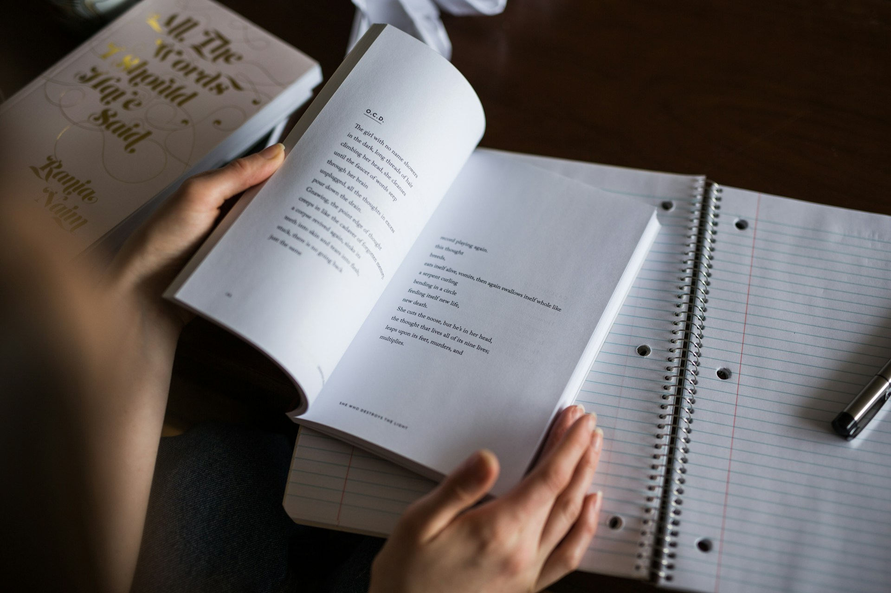
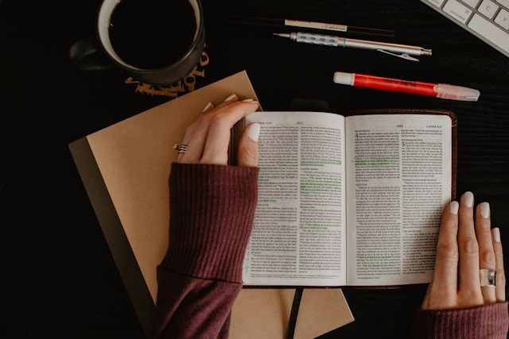

Без отсутствия правильной стратегии подготовки даже самый умный и одаренный человек способен показать плохие результаты.
Мечты не работают, пока не работаешь ТЫ.
Без отсутствия правильной стратегии подготовки даже самый умный и одаренный человек способен показать плохие результаты.
Мечты не работают, пока не работаешь ТЫ.
Полезные советы, которые помогут в подготовке к экзаменам
Распишите свой распорядок дня заранее, чтобы не тратить время на размышление о том, когда приступать к работе и с какого дела начать. Хорошо организованная рутина поможет вам снизить уровень стресса и повысить эффективность подготовки. Распределите свои предметы ЕГЭ по дням недели, также отметьте, когда вы будете разбирать отдельные задания, а когда будете решать полноценные пробники и задания из второй части, которые требуют больше времени.

Недостаточно просто прорешивать варианты ЕГЭ, даже если делать это каждый день. Время от времени полезно, например, решать задачи олимпиадного уровня. Во-первых, это поможет понять, что ЕГЭ — не катастрофа. Во-вторых, подобная зарядка стимулирует мозг на продуктивную работу. Готовьте когнитивные карты на сложные темы вместо традиционных конспектов. Это упражнение помогает лучше усваивать информацию, структурировать данные и находить причинно-следственные связи между научными фактами, историческими эпохами и теориями. А хотя бы один раз в 2-3 недели устраивайте собственный репетиционный экзамен — по всем правилам, с учётом времени и присутствующим в импровизированной аудитории наблюдателем (в качестве дополнительного раздражителя).
Самое лучшее, что можно сделать при подготовке к ЕГЭ – довести решение тестов до автоматизма. Способность автоматически решать тесты позволяет быстро успокоиться на сдаче экзамена, стресса вряд ли кому-то удается избежать полностью. То есть одиннадцатиклассник уже отвечал на подобные вопросы много раз, а значит знакома схема ответа и знаний достаточно. Также появляется возможность раньше закончить выполнение заданий, а значит останется много времени на спокойную проверку.
После того как вы повторили тему, сделайте по ней мини-конспект с основными тезисами и понятиями, которые являются для вас самыми трудными. Затем эти карточки можно будет развесить по дому, например, на холодильнике или перед рабочим столом. Также для заучивания терминов подойдут карточки для запоминания: на одной их стороне пишется само понятие, а на другой - его определение. С их помощью можно быстро проверить себя на знание материала и отметить слабые места.
Многие ученики отмечают, что у них получается намного лучше запоминать материал, когда в процессе повторения они проговаривают его вслух. Если у вас будет возможность объяснить какую-либо тему своим родным или друзьям, то это также будет очень эффективно для подготовки. Так вы будете активно работать с материалом и использовать понятные для вас формулировки, которые намного лучше запоминаются.